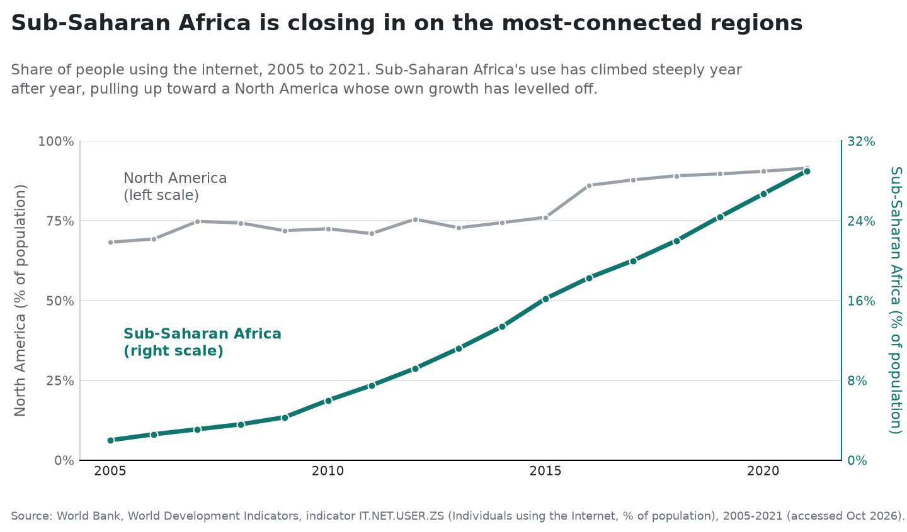
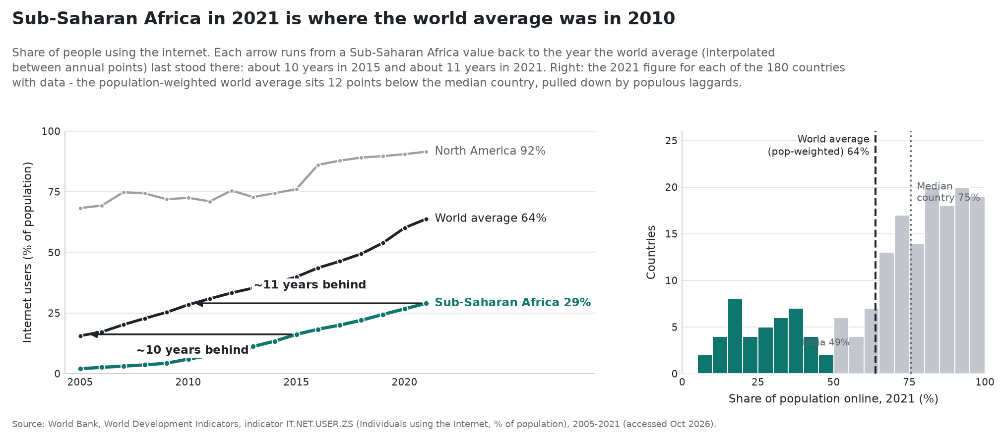

Proposition: The global digital divide is closing.
Both charts below come from one dataset: the World Bank's series on the share of each country's population that uses the internet (indicator IT.NET.USER.ZS), 2005 to 2021. No number is changed or invented. The first chart argues the divide is closing; the second argues it is not. The only thing that differs between them is how I chose to draw the same numbers.
FOR the Proposition

Design decisions
- Two vertical axes, one per line. North America reads on the left (0 to 100%) and Sub-Saharan Africa on the right (0 to 32%). Because 29% on the right axis sits at the same height as 92% on the left, the two lines rise to meet and the gap looks all but gone. Only the two sets of tick labels say the scales differ. (deceptive, -2)
- Colour each axis to its line. The grey axis goes with the grey North America line, the teal axis with the teal Sub-Saharan Africa line, so the split reads as a tidy design touch, which is exactly what keeps a reader from noticing the scales are different. (deceptive, -1)
- One line per region, nothing underneath. Collapsing a whole region into a single line hides that the countries inside it run from under 10% to over 70%. One smooth climb reads as everyone rising together. (deceptive, -1)
- Leave the world average off. Showing only the richest and poorest regions keeps the eye on two lines converging. The world line, climbing steadily away from Sub-Saharan Africa, would have given the game away. (deceptive, -2)
Each choice is individually defensible, which is the point: a reader who never checks the two axes leaves convinced the divide is nearly closed.
AGAINST the Proposition

Design decisions
- One axis for every region. North America, the world average, and Sub-Saharan Africa share a single 0-to-100% scale, so the vertical distance is the real gap: 29% sits as far below the world's 64% and North America's 92% as it actually is. (earnest, +2)
- Measure the gap in years. Sub-Saharan Africa's 2021 level is one the world average passed around 2010, so the region runs about eleven years behind, and that lag has not shrunk since 2015. "Years behind" is much harder to spin than a line rising toward a ceiling. (earnest, +2)
- North America drawn in full, not as a ceiling. It stays on the chart near 92% so the reader sees how much room is still above the world line, not a flat line the others are quietly sneaking up on. (earnest, +1)
- Drop the regional lines; show every country. The histogram puts all 180 countries on one axis: 42 are still under half, down to Burundi at 7%. The spread the single lines smoothed away becomes the point. (earnest, +2)
- Label the two "averages" honestly. The population-weighted world figure (64%) sits well below the median country (75%) because large, less-connected countries like India (49%) pull it down, so "two-thirds of the world is online" describes a world most countries are already ahead of. (earnest, +1)
This design hides nothing - one shared axis, the gap in years, every country shown - and it lands on the opposite conclusion.
Final reflection
Working both sides from one dataset made the lesson concrete: the data did not decide the conclusion, my design choices did. Every number on both pages is the World Bank's and I never changed a value. The "closing" chart and the "persists" chart disagree only because one puts the two regions on separate scales so their lines meet, while the other puts every region on one scale and states the gap in years.
I'd call the first chart deceptive and the second earnest, and the gap between them is what the design asks the reader to forget. The second axis and the missing world line are not lies - a statistician would sign off on each choice on its own - but together they draw a 29% at the same height as a 92% and bury the countries inside one regional line. The second chart withholds nothing: one shared axis, the gap stated in years, and every country shown, including the ones still under 10%. It is the less flattering chart, and I think the more honest one.
Where I'd draw the line: persuasion chooses which true thing to emphasize; deception chooses a true framing precisely because it expects the reader to misread it. A second axis to compare two series with very different ranges is sometimes fair. Two axes lined up so a 29% meets a 92%, under a title about "closing in," are chosen so the reader concludes the gap is almost gone. Same data, two scales - the intent is the whole difference.